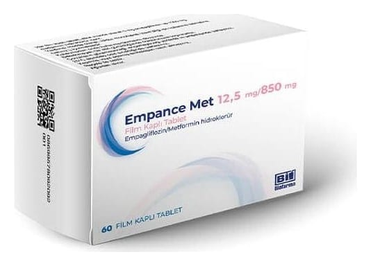

Empance Met 12,5 mg/850 mg Film Kaplı Tablet, 60 ADET

Ne için kullanılır
KT · Bölüm 1EMPANCE MET 12,5 mg/850 mg film kaplı tabletler, pembemsi beyaz renkli, oblong, bikonveks yapıdadır.
EMPANCE MET empagliflozin ve metformin adı verilen iki etkin madde içerir. Her iki etkin madde de diyabet için kullanılan “oral antidiyabetikler” ilaç grubuna aittir. Bunlar tip 2 diyabet hastalığının tedavisinde kullanılan ağızdan alınan ilaçlardır.
Tip 2 diyabet nedir? Tip 2 diyabet, genlerinizden ve yaşam tarzınızdan kaynaklanan bir hastalıktır. Eğer tip 2 diyabetiniz varsa, pankreasınız kanınızdaki glikoz (şeker) seviyesini kontrol etmek için yeterli insülini yapmaz ve vücudunuz kendi insülinini etkili bir şekilde kullanamaz. Bu durumda, kanınızda glikoz düzeyi yükselir ve kalp hastalığı, böbrek hastalığı, körlük ve uzuvlarınızda dolaşım yetersizliğine yol açabilir.
EMPANCE MET nasıl çalışır? Empagliflozin, “sodyum glikoz ortak-taşıyıcı 2 (SGLT2)” inhibitörü adı verilen bir ilaç grubuna aittir ve böbreklerinizdeki SGLT2 proteinini bloke ederek etki gösterir. Böylece idrarınızdan kan şekeri (glikoz) uzaklaştırılmış olur. Metformin, kan şekeri düzeylerini başka bir yolla düşürür. Başlıca, karaciğerde glikoz oluşumunu engeller.
Dolayısıyla EMPANCE MET kanınızdaki şeker düzeyinizi düşürür.
EMPANCE MET aşağıdaki durumlarda kullanılır: • EMPANCE MET, tip 2 şeker hastalığı (tip 2 diyabet) olan ve hastalığı diyet ve egzersize eklenen metformin ile veya diyet ve egzersize eklenen metformin + diğer şeker hastalığı ilaçları ile kontrol edilemeyen erişkin (18 yaş ve üzeri) hastalarda, bu hastalığın tedavisi için diyet ve egzersize ek olarak kullanılır.
• EMPANCE MET, diyabet tedavisinde kullanılan diğer ilaçlarla birlikte de kullanılabilir. Bu ilaçlar, ağızdan kullanılan ilaçlar olabileceği gibi, insülin gibi enjeksiyonla verilen de olabilir.
• Ayrıca, halen ayrı ayrı tabletler şeklinde kullanılmakta olan empagliflozin ve metformin yerine, alternatif olarak, EMPANCE MET, tek tablet olarak kullanılabilir. Eğer bu ilacı kullanmaya başlarsanız, doz aşımını engellemek için, ayrı ayrı aldığınız empagliflozin ve metformin tabletleri artık kullanmayınız.
Doktorunuzun, hemşirenizin veya eczacınızın önerdiği diyet ve egzersiz planına uymaya devam etmeniz çok önemlidir.